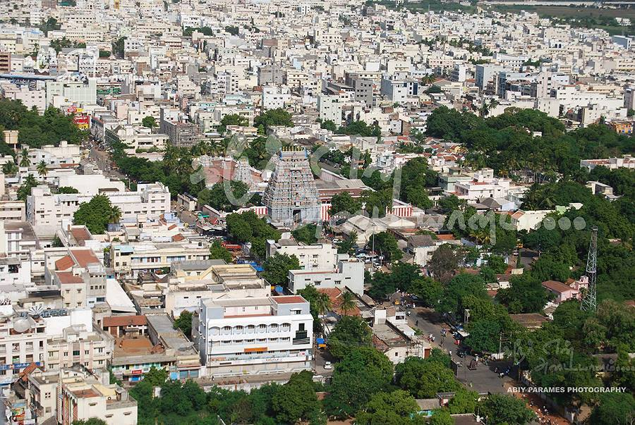
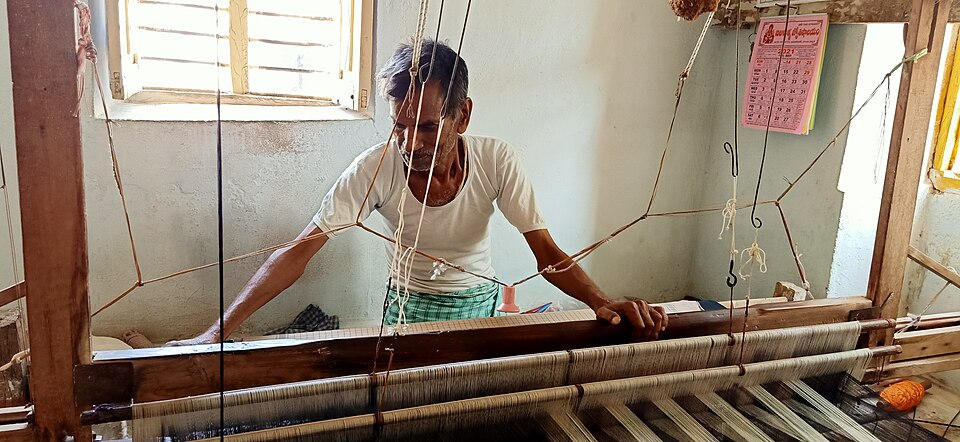
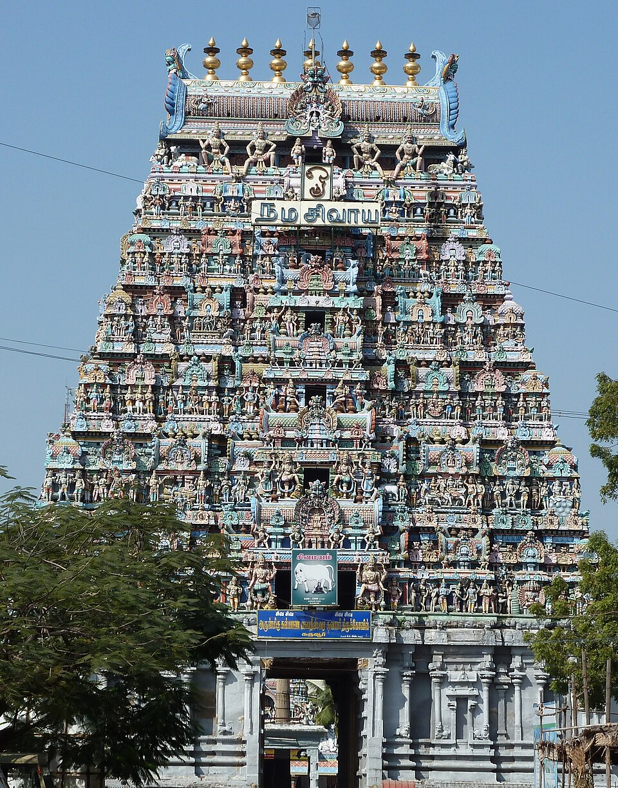
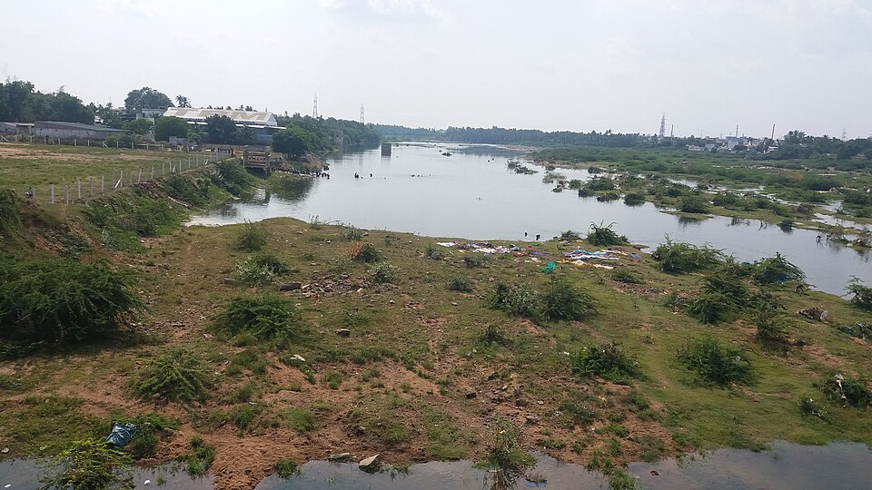

மாவட்டம் · Since the Sangam Era (2000+ years)
The Land of Handlooms • The Land of Minerals

Karur is one of the oldest towns of Tamil Nadu, with a history spanning over 2000 years. During the Sangam age it flourished as a great trading centre and was the capital city of the early Chera kings (Vanchi-Karuvur). Even the Greek scholar Ptolemy (150 CE) listed it as "Korevora", a famous inland trading centre.
Situated on the banks of the Kaveri and Amaravathi rivers, the district is bounded by Namakkal, Dindigul, Tiruchirappalli and Erode. Today it is world-famous for its handloom home textiles and the Kalyana Pasupatheeswarar temple — the foremost of the Kongu sacred shrines.
Sacred temples, serene dams and historic sites across the district

The weaving craft came to Karur from Kerala and today the district is synonymous with handloom "made-ups" — bed linen, kitchen, toilet, table linen and wall hangings — supplied to world leaders like Walmart, Target, IKEA. Over 450,000 people are employed in the trade, generating about ₹6,000 crore in exports.

Karur is a treasure of Dravidian sculpture. The grand Kumbam festival at Sri Mariamman temple in May brings people of every community together, with sacred water carried from the Amaravathi river. The Pasupatheeswarar temple's famous sculpture shows milk oozing from a cow's udder onto the lingam.

Karur lay on the ancient Roman trade route from Muziris (west coast) to Arikamedu (east coast). Excavations at Karur and nearby Kodumanal reveal Tamil-Brahmi inscriptions, Roman amphorae, rouletted ware and punch-marked coins from the 5th century BCE.
Karur's festivals are famous for their communal harmony and timeless grandeur
Click any picture to view it in full screen
Police 100 · Ambulance 108 · Fire 101
Women Helpline 1091 · Child Helpline 1098
Collector Office, Karur — 639001
Phone +91 4324 25 00 00
Email collector.karur@nic.in
Best season: Oct – Mar
Kumbam Festival: every May
Karur Handloom bazaars open daily
Pasupatheeswarar Temple open daily
6:00 AM – 12:30 PM & 4:00 PM – 8:30 PM
Nearest airport is Tiruchirappalli International Airport (TRZ), about 78 km away. Coimbatore and Chennai airports are also well connected.
Karur Junction is a major railway station on the Erode–Trichy main line, with direct trains to Chennai, Bengaluru, Coimbatore and Madurai.
Well-connected by NH-44 (Salem–Kanyakumari) and NH-67. Regular state and private buses run from Chennai, Trichy, Coimbatore and Erode.
Ask us anything about visiting Karur — heritage, travel or the handloom industry
📍 Collector Office, Karur — 639001, Tamil Nadu
📞 +91 4324 25 00 00
✉️ collector.karur@nic.in
🌐 karur.nic.in
கரூர் மாவட்டம் — கைத்தறி மற்றும் தாது வளத்தின் நிலம்